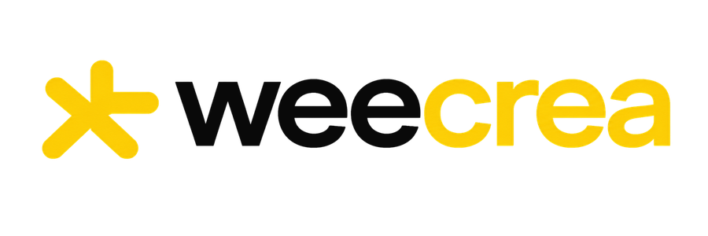

Como está o projeto
Atualiza sozinho. Para mexer aqui, marque as caixinhas da issue do seu módulo no GitHub.
Módulos
Travados, precisam de ajuda

Atualiza sozinho. Para mexer aqui, marque as caixinhas da issue do seu módulo no GitHub.